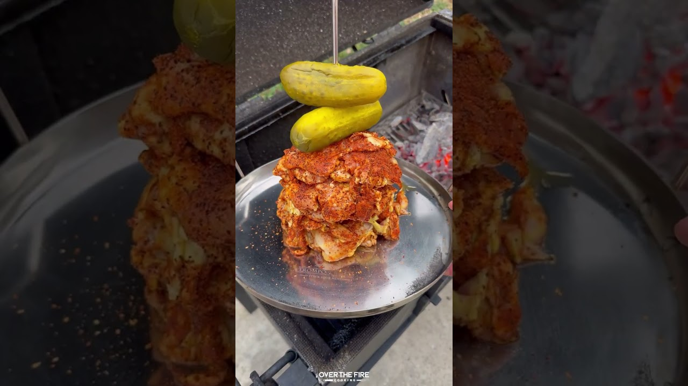

A vertical spit of stacked chicken thighs, roasted by the fire and shaved off in cayenne-butter-drenched ribbons — from Derek Wolf of Over The Fire Cooking. The short doesn't list amounts, so the trompo build follows Derek's written chicken-trompo method and the Nashville hot flavors are the standard ones. White bread and pickles are not optional.
Pound the thighs to an even ¼-inch thickness — they stack tighter and cook evenly. Marinate in the pickle brine and hot sauce, 4 hours minimum, overnight if you plan ahead (you don't).
Drain the thighs, pat dry, and toss with the rub until every side is rust-colored.
Build the trompo: half the onion cut-side up on a vertical skewer stand, then thread the thighs flat, one on top of another, rotating each layer so the stack stays even. Crown with the other onion half. Press the whole tower down snug.
Set the trompo next to — not over — a medium fire, or in a 375°F grill set for indirect heat. Roast about 2 hours, giving it a quarter turn every 30 minutes, until the outside is burnished and the center reads 165°F.
Whisk the hot-butter spices into the melted butter. If any drippings collected under the trompo, whisk those in too — that's the good stuff.
Carve the trompo top to bottom in thin shavings, letting them fall into a pan. Pour the hot butter over and toss until everything glistens an alarming red.
Pile onto white bread, top with pickles, and serve while the butter is still dripping. Keep a drink nearby.